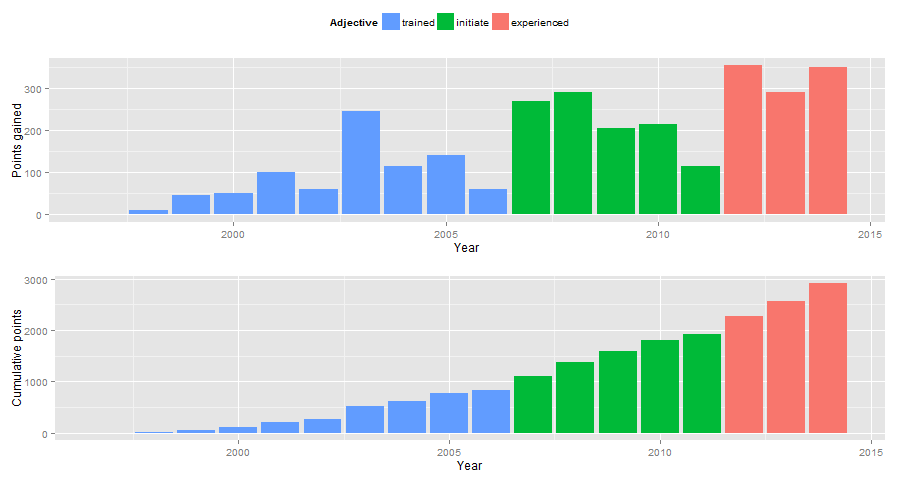
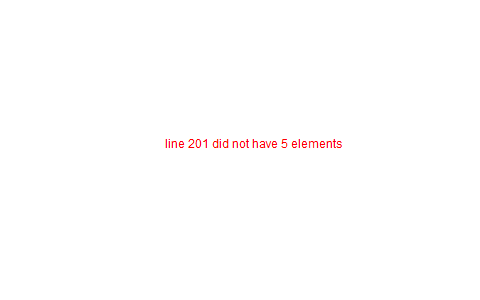
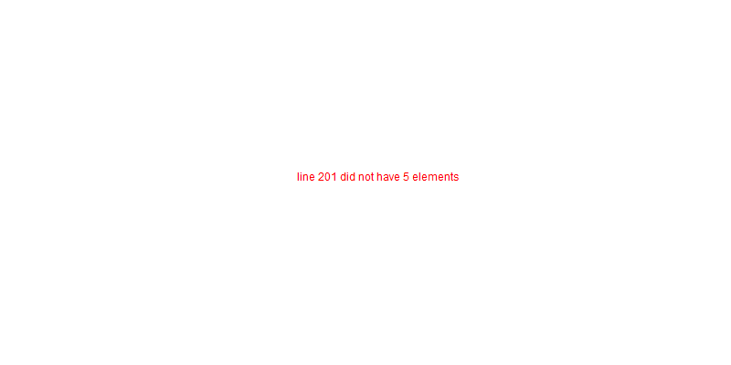

Epic Quest of Awesome
Related to http://quest.digitalcrusader.ca/ and http://www.nerdfitness.com/epic-quest/ . Should tie this in with my evil plans somehow.
You can find the source of this page on Github. =) Want to get in touch? Find me at sacha@sachachua.com.
Summary
| Current points | 3065 |
| Level | 3 |
| Description | experienced |
Analysis
Yearly

| Year | Points gained | Cumulative points | Level | Adjective |
|---|---|---|---|---|
| 1997 | 0 | 0 | 1 | trained-initiate |
| 1998 | 10 | 10 | 1 | trained-initiate |
| 1999 | 50 | 60 | 1 | trained-initiate |
| 2000 | 50 | 110 | 1 | trained-initiate |
| 2001 | 100 | 210 | 1 | trained-initiate |
| 2002 | 60 | 270 | 1 | trained-initiate |
| 2003 | 245 | 515 | 1 | trained-initiate |
| 2004 | 115 | 630 | 1 | trained-initiate |
| 2005 | 140 | 770 | 1 | trained-initiate |
| 2006 | 60 | 830 | 1 | trained-initiate |
| 2007 | 270 | 1100 | 2 | experienced |
| 2008 | 290 | 1390 | 2 | experienced |
| 2009 | 205 | 1595 | 2 | experienced |
| 2010 | 215 | 1810 | 2 | experienced |
| 2011 | 115 | 1925 | 2 | experienced |
| 2012 | 355 | 2280 | 3 | savvy |
| 2013 | 290 | 2570 | 3 | savvy |
| 2014 | 350 | 2920 | 3 | savvy |
| 2015 | 45 | 2965 | 3 | savvy |
library(ggplot2) library(gridExtra) plot <- ggplot(data, aes(x = Year, y = Points.gained, fill = Adjective)) + geom_bar(stat = "identity") + theme(legend.direction = "horizontal") + guides(fill = guide_legend(reverse=TRUE)) + labs(y = "Points gained") + geom_text(aes(label = Points.gained, x = Year, y = Points.gained + 10, vjust=0)) + scale_y_continuous(expand=c(0,40)) cumulative_plot <- ggplot(data, aes(x = Year, y = Cumulative.points, fill = Adjective)) + geom_bar(stat = "identity") + theme(legend.position = "none") + labs(y = "Cumulative points") + geom_text(aes(label = Cumulative.points, x = Year, y = Cumulative.points + 50, vjust=0)) + scale_y_continuous(expand=c(0,300)) # http://stackoverflow.com/questions/12041042/how-to-plot-just-the-legends-in-ggplot2 g_legend<-function(a.gplot){ tmp <- ggplot_gtable(ggplot_build(a.gplot)) leg <- which(sapply(tmp$grobs, function(x) x$name) == "guide-box") legend <- tmp$grobs[[leg]] return(legend)} legend <- g_legend(plot) all <- grid.arrange(legend, arrangeGrob(plot + theme(legend.position = "none"), cumulative_plot), heights=c(1,10)) print(all)
Categories

library(plyr) library(ggplot2) categories <- ddply(data, c("Category"), summarize, Points=sum(XP)) cat_sorted <- transform(categories, Category=reorder(Category, Points)) plot <- ggplot(data = cat_sorted, aes(x = Category, y = Points)) plot <- plot + geom_bar(stat="identity") plot <- plot + geom_text(aes(label = Points, x = Category, y = Points + 10, hjust=0)) plot <- plot + scale_y_continuous(expand=c(0,70)) plot <- plot + coord_flip() print(plot)
Category-year heatmap
library(plyr) library(ggplot2) categories <- ddply(data, c("Category", "Approximate.date"), summarize, Points=sum(XP)) plot <- ggplot(categories, aes(x = Approximate.date, y = Category)) plot <- plot + geom_tile(aes(fill=Points), colour="white") plot <- plot + scale_fill_gradient(low = "white", high = "steelblue", limits = c(0, max(categories$Points))) plot <- plot + labs(x = "Year") print(plot)

Future quests
| ID | Category | Estimated XP | Description | Prerequisites |
|---|---|---|---|---|
| Analysis | 5 | Visualized ideas over a year | time | |
| Analysis | 20 | Used animations to understand data | ||
| Business | 50 | Dealt with a famine year and didn't panic | time | |
| Business | 50 | Enjoyed working in someone else's small company | ||
| Connecting | 5 | Completed another 10 episodes of Emacs Chats | CEC1 | |
| Connecting | 20 | Organized meetups | ||
| Connecting | 50 | Completed the rest of the F projects | CPI2 | |
| Cooking | 5 | Made paella | ||
| Cooking | 5 | Made special types of bread, including sourdough | ||
| Cooking | 10 | Made braising and other fancy cooking terms part of my vocabulary | ||
| Cooking | 10 | Adjusted the feel of things by using herb combinations | ||
| Cooking | 10 | Competently made pizza | ||
| CCUT | Cooking | 20 | Cut standard sizes | |
| CGAR | Cooking | 20 | Learned advanced cutting and garnishing techniques | CCUT |
| Cooking | 20 | Regularly garnish and plate pretty meals | CGAR | |
| Drawing | 5 | Figured out digital equivalent of index card speed and flexibility | ||
| Drawing | 5 | Developed colour habits for index cards | ||
| Drawing | 5 | Made Sketchnotes 2014 | ||
| Drawing | 20 | Drew recognizable people | ||
| Finance | 5 | Reached goal 2.5 | time | |
| Finance | 10 | Sold stocks in a non-registered account and properly accounted for them | ||
| Finance | 20 | Weathered a bear market with lots of investments | time | |
| Learning | 10 | Worked through the Japanese language books we have at home | ||
| LCOA | Learning | 20 | Worked with a coach for three months | |
| Life | 5 | Got Canadian passport | ||
| Life | 10 | Was tranquil and resilient in the face of my mortality | time | |
| Life | 10 | Created four major projects in 2015 | ||
| Life | 20 | Was tranquil and resilient in the face of sickness | time | |
| Life | 30 | Was tranquil and resilient in the face of the death of someone close to me | time | |
| Life | 100 | Enjoyed middle age | time | |
| Life | 100 | Enjoyed old age | time | |
| Programming | 5 | Set up autocomplete | ||
| Programming | 5 | Set up flychecking | ||
| Programming | 5 | Made test-driven development part of my normal workflow | ||
| Programming | 5 | Got the hang of a CSS framework | ||
| Programming | 5 | Got the hang of a CSS preprocessor | ||
| Programming | 5 | Got the hang of a Javascript preprocessor | ||
| Programming | 5 | Helped other people program more effectively | ||
| PCROSS | Programming | 5 | Set up smooth cross-referencing between blog posts and Flickr | |
| Programming | 10 | Set up style checking and code analysis | ||
| Programming | 10 | Contributed automated tests to Emacs packages | ||
| Programming | 10 | Built a routine tracker using Node | ||
| Programming | 20 | Got feedback from coaches or open source community | ||
| Speaking | 10 | Made videos part of the way I regularly share (~12 original videos a year) | ||
| Writing | 10 | Developed structures for journaling | ||
| Writing | 50 | Wrote a set of three or four 4-part courses | ||
| Writing | 50 | Developed ability to look at my writing with strangers' eyes | ||
| Writing | 50 | Developed ability to cut writing ruthlessly | ||
| WBK | Writing | 100 | Wrote book instead of compiling it | |
| Writing | 100 | Habitually wrote books (>= 3 books in 5 years) | WBK, WMINI | |
| WMINI | Writing | 50 | Habitually wrote mini-guides (>= 4 mini-guides in 2 years) |
Accomplishments
| Approximate date | Category | XP | Description | ID |
|---|---|---|---|---|
| 1989 | Programming | 20 | Used LOGO in class; learned it previously | |
| 1990 | Programming | 20 | Picked up Turbo Pascal around this time | |
| 1993 | Learning | 5 | Went to chess camp | |
| 1994 | Connecting | 5 | Went to science camp | |
| 1995 | Programming | 10 | Learned how to work with Linux | |
| 1995 | Programming | 10 | Learned QBasic | |
| 1995 | Programming | 10 | Started doing programming competitions | |
| 1995 | Cooking | 10 | Made lasagna with my mom | |
| 1995 | Learning | 5 | Competed in chess tournaments | |
| 1995 | Learning | 10 | Graduated with special award | |
| 1998 | Connecting | 5 | Asked someone to the prom | |
| 1998 | Connecting | 5 | Went to leadership conference | |
| 1999 | Connecting | 5 | Asked someone in a different school to a dance | |
| 1999 | Drawing | 5 | Had drawing and poem included in a book | |
| 1999 | Learning | 10 | Graduated with special award | |
| 1999 | Life | 5 | Danced swing and chacha | |
| 1999 | Learning | 5 | Got the top score on my school's entrance exam | |
| 1999 | Programming | 20 | Won various programming contests in high school | |
| 2000 | Programming | 50 | Picked up Emacs | |
| 2001 | Analysis | 20 | Learned pivot tables | |
| 2001 | Programming | 10 | Scored in the top 10 for the JITSE | |
| 2001 | Speaking | 20 | Started public speaking | |
| 2001 | Writing | 50 | Started a blog | |
| 2002 | Learning | 10 | Contributed to a published paper | |
| 2002 | Programming | 20 | Part of the team that won Best Academic Solution in Microsoft Worldwide .NET Best contest | |
| 2002 | Programming | 10 | Got the top score on the JITSE | |
| 2002 | Programming | 10 | Contributed to open source project | |
| 2002 | Programming | 10 | Gained commit rights to an open source project | |
| 2003 | Cooking | 20 | Cooked for friends | |
| 2003 | Finance | 10 | Started opportunity fund with prize from Trend Micro Software Contest | |
| 2003 | Learning | 100 | Graduated from university | |
| 2003 | Learning | 50 | Experimented with wearable computing | |
| 2003 | Learning | 5 | Received BPI Science Award | |
| 2003 | Learning | 5 | Graduated with special award | |
| 2003 | Programming | 20 | Did well in international programming contests in university | |
| 2003 | Programming | 20 | Maintained open source project (Planner) | |
| 2003 | Programming | 10 | Part of the team that won the Trend Micro Software Contest | |
| 2003 | Speaking | 5 | Featured in Philippine news | |
| 2004 | Connecting | 10 | Phased out unhelpful friends | |
| 2004 | Finance | 10 | Started tracking my finances with Ledger | |
| 2004 | Learning | 10 | Applied for master's degree | |
| 2004 | Life | 50 | Went for technical internship in Japan | |
| 2004 | Life | 10 | Survived my first winter | |
| 2004 | Programming | 10 | Built project submission system | |
| 2004 | Speaking | 10 | Presented at an IT education conference | |
| 2004 | Speaking | 5 | Spoke to an audience of > 750 people | |
| 2005 | Connecting | 5 | Digital activism: Made a fuss about the DigitalPinay project | |
| 2005 | Learning | 5 | Passed JLPT 3 | |
| 2005 | Life | 100 | Moved to Canada | |
| 2005 | Life | 20 | Survived my first Canadian winter | |
| 2005 | Programming | 10 | Built alternative class registration system | |
| 2006 | Cooking | 10 | Went to cooking workshops | |
| 2006 | Finance | 10 | Got IBM to fund my studies | |
| 2006 | Life | 10 | Got myself out of a bind | |
| 2006 | Life | 5 | Danced tango | |
| 2006 | Life | 5 | Danced Renaissance dances in a performance | |
| 2006 | Programming | 10 | Picked up Ruby on Rails | |
| 2006 | Speaking | 10 | Survived TA-ing a class that I was really uncertain about | |
| 2007 | Business | 30 | Started working at IBM | |
| 2007 | Business | 20 | Earned top-contributor ratings at work | |
| 2007 | Connecting | 50 | Asserted my independence in terms of relationships | |
| 2007 | Connecting | 10 | Parted ways with S | |
| 2007 | Cooking | 10 | Survived without meal plan in grad school | |
| 2007 | Cooking | 5 | Made meringue | |
| 2007 | Drawing | 20 | Drew on Nintendo DS | |
| 2007 | Finance | 10 | Set up RRSP | |
| 2007 | Finance | 10 | Graduated with savings instead of debt | |
| 2007 | Learning | 50 | Finished thesis | |
| 2007 | Life | 5 | Went to a charity gala | |
| 2007 | Writing | 50 | Migrated my blog to Wordpress | |
| 2008 | Analysis | 5 | Analyzed my word use | |
| 2008 | Connecting | 10 | Took W- and J- to Manila | |
| 2008 | Cooking | 10 | Tried out community-supported agriculture box | |
| 2008 | Cooking | 10 | Learned canning | |
| 2008 | Cooking | 5 | Made egg tarts | |
| 2008 | Drawing | 20 | Won Slideshare best presentation contest | |
| 2008 | Drawing | 20 | Drew on Cintiq | |
| 2008 | Life | 10 | Adopted two cats | |
| 2008 | Life | 10 | Explored krav maga | |
| 2008 | Life | 10 | Explored yoga | |
| 2008 | Life | 10 | Explored static trapeze | |
| 2008 | Life | 10 | Started a garden | |
| 2008 | Life | 5 | Used a router to round edges | |
| 2008 | Programming | 30 | Delivered Drupal projects | |
| 2008 | Programming | 5 | Explored Second Life programming | |
| 2008 | Programming | 20 | Learned AutoHotkey | |
| 2008 | Speaking | 30 | Made A Gen Y Guide to Web 2.0 at Work | |
| 2008 | Speaking | 20 | Made A Shy Connector | |
| 2008 | Speaking | 20 | Presented at IBM Technical Leadership Conference | |
| 2008 | Speaking | 10 | Gave part of a keynote at an IBM conference | |
| 2008 | Speaking | 10 | Won Best Presentation at the IBM Best Practices Conference | |
| 2008 | Writing | 5 | Tried out speech recognition | |
| 2008 | Writing | 5 | Pitched book proposal | |
| 2009 | Business | 30 | Started delegation experiments | |
| 2009 | Business | 20 | Facilitated executive workshops | |
| 2009 | Connecting | 50 | Made long term plans with W | |
| 2009 | Connecting | 5 | Tried improv classes | |
| 2009 | Finance | 10 | Set up TFSA | |
| 2009 | Life | 20 | Got the hang of bicycle commuting | |
| 2009 | Life | 20 | Got a chest freezer | |
| 2009 | Life | 10 | Sewed stuff | |
| 2009 | Programming | 10 | Developed community toolkit | |
| 2009 | Speaking | 20 | Presented at IBM Technical Leadership Conference again | |
| 2009 | Speaking | 10 | Spoke at Drupalcon | |
| 2010 | Connecting | 30 | Married W | |
| 2010 | Drawing | 50 | Drew on tablet PC | |
| 2010 | Life | 50 | Became a permanent resident | |
| 2010 | Life | 20 | Built Adirondack chairs | |
| 2010 | Life | 10 | Brought my cat over | |
| 2010 | Life | 10 | Adapted to winter | |
| 2010 | Life | 5 | Got my wisdom teeth removed and dealt with post-op procedures; was taken care of afterwards | |
| 2010 | Programming | 30 | Delivered Rails projects | |
| 2010 | Programming | 5 | Introduced code coverage goals for my team project | |
| 2010 | Programming | 5 | Wrote behaviour-driven tests for my team project | |
| 2011 | Analysis | 20 | Built Quantified Awesome for tracking time | |
| 2011 | Analysis | 20 | Used my time and money analysis to plan for experiment | |
| 2011 | Analysis | 10 | Built Quantified Awesome for tracking clothes | |
| 2011 | Business | 10 | Promoted at IBM | |
| 2011 | Drawing | 5 | Drew comics for the IBM intranet homepage | |
| 2011 | Finance | 10 | Set up non-registered investments | |
| 2011 | Life | 20 | Disassembled washing machine and dryer | |
| 2011 | Life | 5 | Dealt with missed flight | |
| 2011 | Programming | 5 | Handled finicky web design things | |
| 2011 | Programming | 10 | Switch to a virtual private server | |
| 2012 | Analysis | 10 | Became co-organizer for Quantified Self Toronto | |
| 2012 | Analysis | 5 | Tracked books | |
| 2012 | Analysis | 10 | Presented at Quantified Self conference | |
| 2012 | Business | 50 | Incorporated | |
| 2012 | Business | 30 | Experimented with sketchnoting business | |
| 2012 | Business | 10 | Experimented with various business models | |
| 2012 | Business | 10 | Sketchnoted Lean Startup Day | |
| 2012 | Connecting | 30 | Worked on I- | |
| 2012 | Connecting | 10 | Started Emacs Chat series | |
| 2012 | Connecting | 10 | Worked on F- | |
| 2012 | Connecting | 10 | Worked on D- | |
| 2012 | Cooking | 5 | Made coconut buns | |
| 2012 | Cooking | 5 | Switched to a French pin | |
| 2012 | Cooking | 5 | Made pie | |
| 2012 | Finance | 5 | Shifted from watching movies and buying books to using the library for practically everything | |
| 2012 | Learning | 100 | Started 5-year experiment | |
| 2012 | Programming | 20 | Converted configuration to Org | |
| 2012 | Writing | 20 | Created an index of blog posts | |
| 2012 | Writing | 10 | Compiled edited archive of my favourite posts from 20-30 years of age | |
| 2013 | Analysis | 5 | Tracked stuff | |
| 2013 | Analysis | 20 | Used Tableau for client work | |
| 2013 | Business | 20 | Paid myself a salary | |
| 2013 | Business | 20 | Filed corporate tax returnfor the first time | |
| 2013 | Business | 10 | Amended corporate tax return | |
| 2013 | Business | 10 | Included in books on Web 2.0 | |
| 2013 | Connecting | 20 | Attended Emacs Conference | |
| 2013 | Connecting | 10 | Joined Hacklab | |
| 2013 | Connecting | 10 | Helped with study groups | |
| 2013 | Cooking | 5 | Made pad thai from scratch | |
| 2013 | Cooking | 5 | Made pizza from scratch | |
| 2013 | Drawing | 20 | Made guide for learning Emacs | |
| 2013 | Drawing | 10 | Made guide for learning Org | |
| 2013 | Drawing | 10 | Scanned my notebooks | |
| 2013 | Finance | 50 | Reached goal 4 | |
| 2013 | Learning | 30 | Focused on self-directed learning | |
| 2013 | Learning | 5 | Finished a MOOC | |
| 2013 | Life | 5 | Dealt with lost passport | |
| 2013 | Life | 5 | Learned about Stoicism | |
| 2013 | Writing | 20 | Compiled Sketchnotes 2012 | |
| 2014 | Analysis | 5 | Tracked litter box use | |
| 2014 | Business | 30 | Started selling PWYW resources | |
| 2014 | Business | 10 | Paid myself dividends | |
| 2014 | Business | 5 | Narrated videos for client project | |
| 2014 | Connecting | 30 | Worked on I2 | CPI2 |
| 2014 | Connecting | 20 | Worked on F with P | |
| 2014 | Connecting | 20 | Enjoyed park time with friends | |
| 2014 | Connecting | 5 | Completed 10 episodes of Emacs Chat series | CEC1 |
| 2014 | Connecting | 10 | Started Emacs Hangout series | |
| 2014 | Connecting | 10 | Experimented with Google Helpouts - got good reviews | |
| 2014 | Cooking | 10 | Started cooking at Hacklab | |
| 2014 | Cooking | 5 | Made good garlic fried rice | |
| 2014 | Cooking | 5 | Made Japanese curry from scratch | |
| 2014 | Cooking | 5 | Made Thai curry from scratch | |
| 2014 | Drawing | 20 | Animated videos for client project | |
| 2014 | Drawing | 20 | Created print book of sketches | |
| 2014 | Drawing | 5 | Drew in sketchbooks | |
| 2014 | Drawing | 5 | Included in books on drawing | |
| 2014 | Finance | 20 | Reached goal 3 | F3PR |
| 2014 | Learning | 5 | Worked through Minna no Nihongo I by myself | LMN1 |
| 2014 | Learning | 5 | Finished a paid course - link | LPAY |
| 2014 | Life | 50 | Became a Canadian citizen - link | LCAN |
| 2014 | Programming | 20 | Used NodeJS and AngularJS for a client project - link | PNOD |
| 2014 | Programming | 5 | Pulled information out of Evernote | |
| 2014 | Speaking | 5 | Experimented with Frugal Fire series | |
| 2014 | Speaking | 5 | Experimented with Helpers Help Out series | |
| 2014 | Drawing | 5 | Compiled Sketchnotes 2013 - link | D013 |
| 2014 | Writing | 10 | Started private journal - link | WJOU |
| 2015 | Analysis | 10 | Featured in news for tracking - link | |
| 2015 | Drawing | 10 | Drew on index cards - link | DIND |
| 2015 | Analysis | 5 | Tracked index cards - link | AIND |
| 2015 | Life | 10 | Reduced consulting hours to focus on personal projects | LPER |
| 2015 | Programming | 5 | Pulled information out of Flickr | PFLI |
| 2015 | Programming | 5 | Used continuous integration testing for one of my projects - link | PINT |
Skill ideas
Cooking
- Out of a box
- Following recipes
- Improvising
- Creating
Mini-skills
- ☑ Help someone cook
- ☑ Cook following a simple recipe (boil, bake, simmer)
- ☑ Stir-fry
- ☑ Invest in kitchen
- ☑ Adopt mise en place
- ☑ Cook multiple things at the same time
- ☑ Recover from some errors
- ☑ Identify common herbs
- ☑ Adjust the taste of things by using herbs
- ☑ Cook with fresh herbs
- ☑ Substitute ingredients
- ☑ Adapt recipes to personal tastes
- ☐ Make braising and other fancy cooking terms part of your vocabulary
- ☐ Adjust the feel of things by using herb combinations
- ☐ Cut consistent sizes
- ☐ Learn advanced cutting techniques
- ☐ Garnish and plate
Types of food
- ☑ Soup
- ☑ Cream soup
- ☑ Casserole
- ☑ Noodles
- ☑ Stir-fry
- ☑ Rice
- ☑ Pizza
- ☑ Bread
- ☑ Snacks
- ☑ Desserts
- ☑ Pie
- ☑ Curry
- ☑ Filipino food
- ☐ Paella
- ☐ Bread - special types
- ☐ Pizza - competent
Finance
- ☑ Spend less than you earn
- ☑ Track income and spending
- ☑ Plan for long-term expenses
- ☑ Build emergency fund
- ☑ Build retirement savings
- ☑ Build other savings
- ☑ Make peace with budgeting
- ☑ Build opportunity fund / play money into budget
- ☑ Decide bond-equity allocation and rebalance
- ☑ Plan for large expenses
- ☑ Provide additional information to the tax agency on request
- ☐ Sell stocks and properly account for them
- ☐ Weather a bear market with lots of investments
Analysis
- ☑ Analyze text
- ☑ Analyze spreadsheets
- ☑ Scrape data
- ☑ Use commercial analysis tool
- ☑ Build analysis tool
- ☑ Program with chart library
- ☑ Program with drawing library
- ☑ Look for correlations in data
- ☐ Reject spurious correlations and other analytical errors
- ☐ Use animations to understand data
Writing
- ☑ Write rough notes
- ☑ Write reasonably polished notes
- ☑ Edit
- ☑ Outline within a post
- ☑ Transform an outline into prose
- ☑ Transform prose into an outline
- ☑ Outline across posts
- ☑ Compile information
- ☑ Compile and revise information
- ☑ Identify writing role models
- ☑ Write about writing
- ☑ Write a 4-part course
- ☐ Write a set of 4-part courses
- ☐ Look at my writing with a stranger's eyes
- ☐ Cut my writing with ruthless scissors
- ☐ Write book from scratch-ish (according to a plan)
Speaking
- ☑ Give a talk
- ☑ Give talks in front of a large audience
- ☑ Give talks online
- ☑ Create standalone slides
- ☑ Give a talk without slides
- ☑ Give a talk with a drawing
- ☑ Plan and execute short videos
- ☑ Create podcasts
- ☐ Make videos part of the way I regularly share
Drawing
- ☑ Draw stick figures
- ☑ Draw on paper
- ☑ Draw on a mobile device
- ☑ Draw on a computer
- ☑ Draw objects
- ☑ Draw abstract thoughts
- ☐ Draw recognizable people
Business
- ☑ Enjoy working in a corporation
- ☑ Enjoy working in my own company
- ☑ Do the paperwork related to running one's own company
- ☑ Take advantage of other people's time through delegation
- ☑ Take advantage of other people's talents through delegation
- ☑ Take advantage of other people's perspectives through delegation
- ☑ Earn enough to cover my expenses
- ☐ Enjoy working in someone else's small company
- ☐ Deal with a famine year
Connecting
- ☑ Make friends
- ☑ Be deliberate about friendships
- ☑ Go to meetups
- ☑ Co-organize meetups
- ☐ Organize meetups
Learning
- ☑ Finish formal education
- ☑ Learn about topics with readily-available resources
- ☑ Learn about topics without readily-available resources
- ☑ Finish a MOOC
- ☑ Finish a paid course
- ☑ Organize my learning from books
- ☑ Learn from interviews
- ☑ Learn from research
- ☑ Learn from communities
- ☐ Learn from a coach
Programming
- ☑ Learn frameworks
- ☑ Set up automated tests
- ☑ Set up continuous integration
- ☑ Set up code coverage
- ☑ Set up interactive development
- ☑ Write shell scripts
- ☑ Use consoles
- ☑ Use debuggers
- ☑ Deploy code to production
- ☑ Use staging environments
- ☑ Recover from data mistakes
- ☑ Help other people work more effectively
- ☑ Build tools and tweak own workflow
- ☐ Set up autocomplete
- ☐ Set up flychecking
- ☐ Set up style checking and code analysis
- ☐ Get feedback from coaches or open source community
- ☐ Make test-driven development part of my normal workflow
- ☐ Help other people program more effectively
Life
- ☐ Be tranquil and resilient in the face of challenges:
- ☑ pain
- ☑ loss of stuff
- ☑ loss of people
- ☐ sickness
- ☐ others' death
- ☐ your own mortality
- ☑ Embrace uncertainty
- ☑ Take calculated risks
- ☑ Be open to changing the direction of your life based on other people's input
- ☑ Identify what makes you happy
- ☑ Make difficult decisions
- ☑ Plan with optimism, pessimism, and realism
- ☑ Be happy about how you spend your time
- ☐ Enjoy middle age
- ☐ Enjoy old age
Level lookup
- Level experience points from http://dnd4.wikia.com/wiki/Level
- Descriptions from http://www.reddit.com/r/DnD/comments/240uag/a_level_4_is_a_veteran_my_personal_35_level/
| Total XP | Level | Adjective |
|---|---|---|
| 0 | 1 | trained-initiate |
| 1000 | 2 | experienced |
| 2250 | 3 | savvy |
| 3750 | 4 | veteran |
| 5500 | 5 | unusually experienced |
| 7500 | 6 | master |
| 10000 | 7 | amazing |
| 13000 | 8 | extraordinary |
| 16500 | 9 | legendary |
| 20500 | 10 | transcendent |